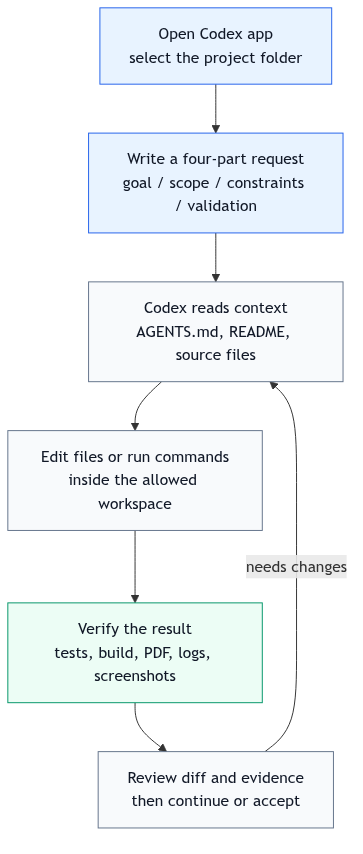

说明任务
写清当前现象、目标结果、相关路径和不想碰的范围。最好附上失败日志、截图、URL 或测试名。
Task handbook
日常任务不是“小任务随便说”。你要把 Codex 当成会读仓库、会改文件、会跑命令、也可能误解边界的工程协作者。最稳的方式是：先给上下文，再限定范围，再要求验证，最后检查证据。
Core loop
这个闭环适用于解释错误、修失败测试、更新文档、调整页面、检查 PR 和清理小 bug。不要一上来就要求 Codex “全部优化一下”。
写清当前现象、目标结果、相关路径和不想碰的范围。最好附上失败日志、截图、URL 或测试名。
要求先读 AGENTS.md、README、相关源码、测试和日志。没有读上下文之前，不要让它直接大改。
一次只解决一个可验证问题。改文件前应知道预计会改哪些文件，避免顺手重构和无关格式化。
让 Codex 跑最窄测试或构建，解释结果；如果不能跑，要说明原因和剩余风险。

Common jobs
新手可以直接从这些模板开始。进阶用户可以把这些模板沉淀进 AGENTS.md 或 skill。
适合刚接手仓库、看不懂模块边界、需要快速建立 mental model。要求 Codex 引用真实文件和函数，不要泛泛解释。
请只读分析这个仓库的登录流程。
先读 AGENTS.md、README 和 auth 相关源码。
输出：入口文件、核心函数、数据流、风险点。
不要改文件。适合已经有明确红灯的场景。给出测试命令和失败片段，让 Codex 先定位根因，再做最小修复。
请修复这个失败测试。
失败命令：npm test -- checkout
范围：只改 checkout 相关代码和测试。
要求：先解释根因，再改最小 diff。适合样式、内容、导航、README、指南页。要说明目标读者和验收方式，尤其是需要浏览器验证时。
请更新 daily-workflow 页面。
目标读者：第一次使用 Codex 的中文用户。
验收：页面有完整流程、示例、检查清单。
完成后本地静态服务抽样访问。让 Codex 站在 reviewer 视角查 bug、遗漏测试、破坏兼容和文档缺口。只读 review 时要明确“不改文件”。
请 review 当前 git diff。
重点：行为回归、缺失测试、权限/安全风险。
输出：按严重程度排序的 findings。
不要改文件。适合你已经确认改动方向，想让 Codex 负责测试、commit、push、Pages 或 PR 状态确认。一定要要求最终链接和验证证据。
请提交并推送这次网页修改。
提交前：git diff --check，抽样访问关键页面。
提交信息：Improve daily workflow guide
推送后：确认 GitHub Pages built。Prompt quality
Codex 的能力很大程度取决于任务边界。坏请求通常省略上下文、范围、验收和风险；好请求会让 Codex 先读、再判断、再小步执行。
帮我优化一下这个项目。
这个页面太丑了，改好看点。
测试挂了，修一下。
你自己看着办。这些请求的问题是目标不可验收，范围过大，容易导致 Codex 猜需求、乱改文件或给出空泛总结。
请修复 checkout 流程里的失败测试。
背景：
- 当前分支新增了优惠券逻辑
- 失败命令是 npm test -- checkout
范围：
- 可以改 checkout、coupon、对应测试
- 不要改 payment provider 接口
要求：
- 先读 AGENTS.md 和失败日志
- 改动前给 3 行短计划
- 完成后运行最窄测试
验收：
- 测试通过
- 最终说明改了什么、验证了什么、剩余风险Evidence
日常任务完成时，最终回答应该能让你判断是否真的可用。没有证据的“已完成”不算完成。
列出关键文件、关键行为变化、没有改哪些范围。不要只说“优化了代码”。
列出测试、构建、静态服务、页面访问、截图或线上状态。
说明没跑的测试、依赖的外部状态、可能的兼容影响。
给出 commit、PR、Pages URL、issue 链接或产物路径。
完成情况：
- 改了 [文件/模块]，实现了 [可观察行为]
验证：
- 运行了 [命令]，结果 [通过/失败/无法运行及原因]
- 访问了 [URL/页面]，确认 [关键内容]
风险：
- 未验证 [范围]，原因是 [原因]
- 需要你人工确认 [事项]
交付：
- commit: [hash]
- 链接: [URL]Failure modes
发现 Codex 偏离方向时，不要继续追加模糊要求。直接指出偏差，把任务拉回边界。
Real example
这次 daily-workflow.html 原本只有几十个词。用户指出“内容太少”，Codex 按日常任务闭环完成了读上下文、改页面、验证和发布。
用户要求把指南定位成“中文 Codex 实战手册”，并让可选进阶内容也写详细。
Codex 读取 AGENTS.md、当前 HTML 页面、公开 Codex 文档和本地 skill 说明。
重写日常任务页，加入五类高频任务、好坏 prompt、验收证据、常见失败和 closeout 模板。
运行 git diff --check、本地静态服务和公开页面抽样，确认关键标题出现在 HTML 中。